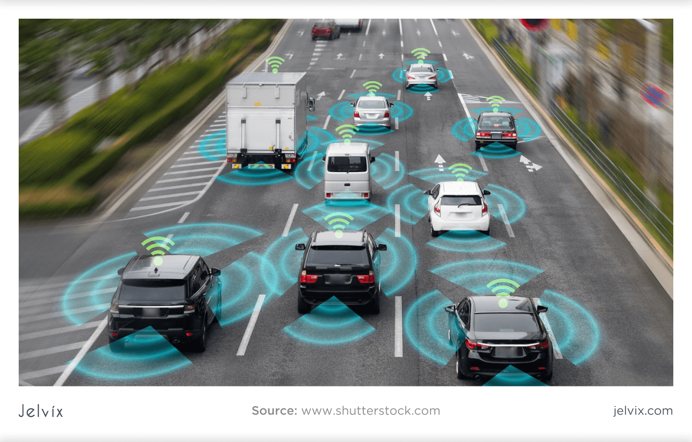
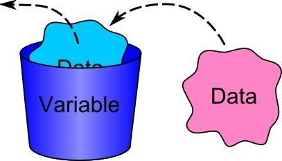
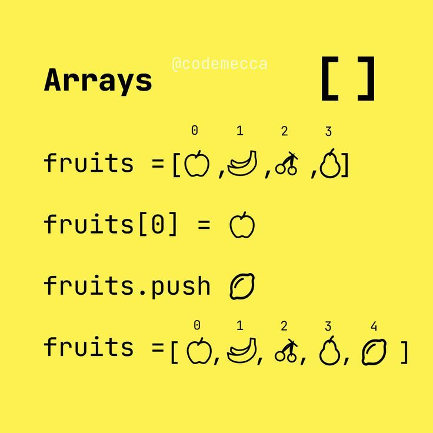
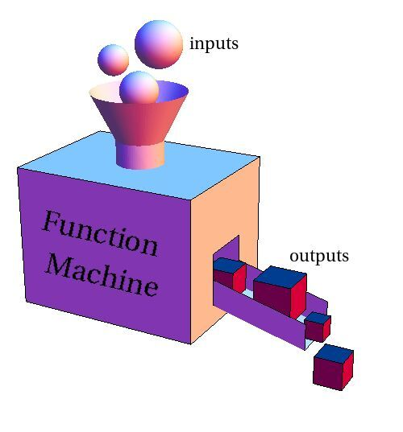
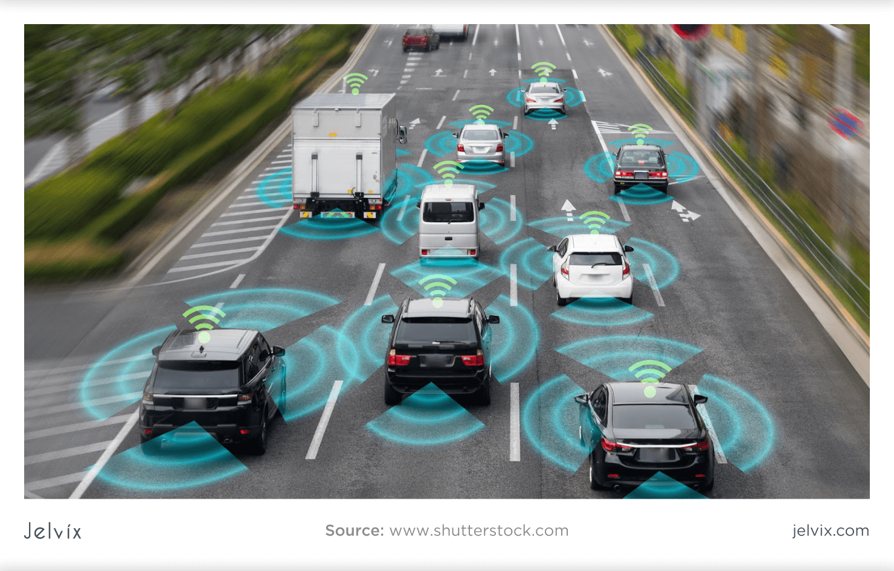
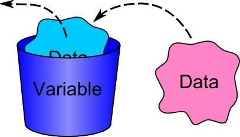
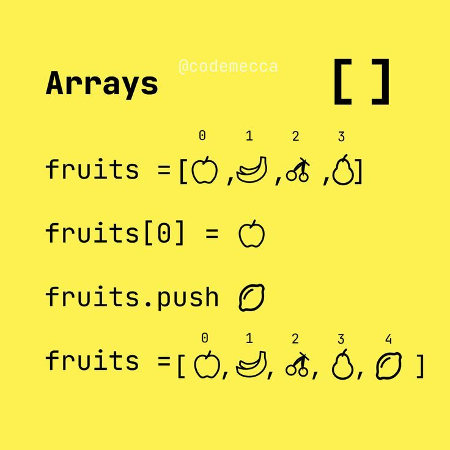
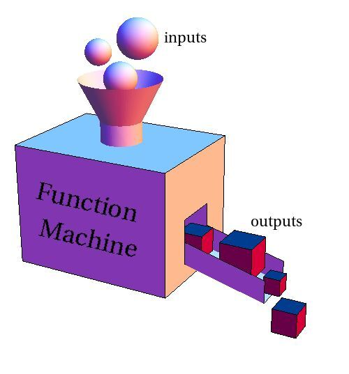
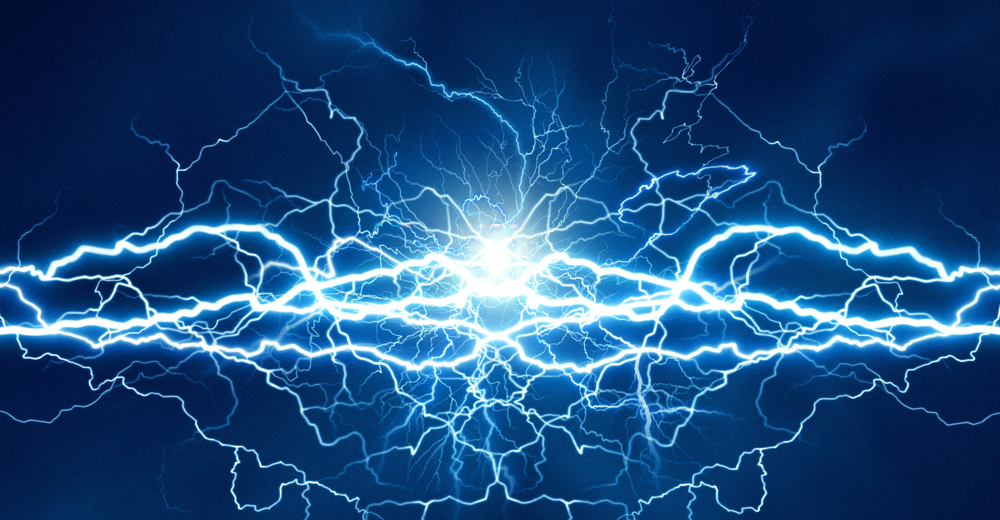

Weekly thinking
Challenges
Fun Awaits
Fun Awaits
Let's take you through


 







Hourly rate: 12 GHS
Total hours worked: 48 hours (weekend)
Total earnings: 48 × 12 = 576 GHS
Saturday night coverage from 9 p.m. to 3 a.m. = 6 hours
Payment to brother = 10% of total weekend salary
10% × 576 = 57.6 GHS
Amount sister keeps after paying brother:
576 - 57.6 = 518.4 GHS
Youtube has estimated amount of 2.5 billion monthly active users. It is reasonable to assume
that
about 122 million users access YouTube daily.
If we estimate those active users watch 3 videos per day that would give us approximately
366
million videos watched daily by users but the numbers will be higher considering auto-play
features.
43 Billion $ per year
In 2023, the Play Store generated about $34.3 billion, and based on
current market growth and
Android’s dominance the rate is going at 7.48% per year
Increment rate=7.48%
Total amount=$34.3 Billion + ($34.3 Billion *0.748*2)
Total amount=$41 Billion dollars
currently
In 2025, the market is estimated to be worth around
$402 million,
which is related to
advancements in AI,
sensor technology, and government-backed initiatives.
If we assume a
consistent annual growth of 10%(compound annual
growth rate)
calculations
the market size projection=$402 million + $402 million * 0.1* 3 for
advancment
=$402 million + $120.6 million
=$ 522.6 million
Here is how we would go about it
When assigned to a project that involves new
and unfamiliar technology, especially one that
is also new to the company, we do believe that a
structured
and proactive approach would be crucial.
The first step we would take is to conduct
thorough
research through official documentation, tutorials, and case studies.
Following
that,
we would identify which parts of the technology
are most relevant to the specific goals
of
the project.
The other important approach is engaging in Hands-on
learning/training, so we would build small test
prototypes or sandbox environments to explore how
the technology works in practice.
Throughout this process, we would engage with online
communities, internal technical experts, and recent
tools like AI assistants to clarify doubts and accelerate
understanding. we would also maintain regular communication
with my supervisor and my team, updating them on progress,
requesting access to resources, and ensuring that the learning
aligns with project timelines and
objectives.
If a product’s key feature fails on the day of a high-profile launch or conference, we believe that immediate and calm problem-solving is crucial. Our first action would be a quick technical assessment to identify whether the issue is fixable in real time or if a temporary workaround can be implemented. Simultaneously,we would communicate clearly and promptly with stakeholders and presenters to manage expectations and reduce panic.
If no immediate fix is possible, we would opt for fallback options such as using a pre-recorded demo video, showing alternate features, or guiding the audience through a conceptual explanation that can help preserve the product’s integrity and the company’s credibility. After the event, together with our team we would perform a root cause analysis, issue patches or fixes, and ensure customers are informed transparently. Moving forward, we would let this situation be used as a learning opportunity to enhance testing procedures, build robust crisis management plans, and motivate myself and my team to be resilient and confident in future product launches.
A simple pulley is a basic mechanical device used to lift or move loads with less effort. It consists of a wheel with a groove along its edge and a rope, belt, or cable that fits into the groove. The pulley works by changing the direction of the force applied to lift a load, and when combined in systems, it can also multiply the force, making it easier to lift heavier objects.
There are three main types of pulleys: fixed, movable, and compound. A fixed pulley is attached to a structure, like a ceiling or beam, and does not move. In this setup, the pulley changes the direction of the force applied. For example, if you pull down on the rope, the load goes up. However, a fixed pulley does not reduce the amount of force needed to lift the object—it only makes the task more convenient.
A movable pulley, on the other hand, is attached directly to the load. In this case, one end of the rope is anchored while the pulley and load move together. When you pull on the rope, the pulley supports part of the load's weight. This setup effectively reduces the amount of force needed to lift the object by half. So if you're lifting a 100 kg object, you only need to exert enough force to lift 50 kg. The trade-off is that you need to pull twice as much rope to lift the object the same height.
In our case, we tried to make the pulley out of wood, a pipe, a rope, and a jar we used as a bucket. What worked while trying to do the prototype was we were able to make a good structure out of the woods and we even tried to make the wheel out of wood and the pipe that we had, unfortunately, the pipe wasn’t rotating on the wood as we had anticipated but it was still lifting the bucket as planned.
Click on this video to check how we
explain our project
Wind is one of the largest sources of renewable energy. It is used to produce electricity by converting the kinetic energy of air in motion into electricity. In the wind turbines, the onshore and offshore winds rotate the rotor blades, which convert kinetic energy into rotational energy. This rotational energy is transferred by a shaft to the generator, thereby producing electrical energy.
The amount of power that can be harvested from wind depends on the size of the turbine and the length of its blades. The output is proportional to the dimensions of the rotor and to the cube of the wind speed. Theoretically, when wind speed doubles, the wind power potential increases by a factor of eight.

Wind energy can be used in many places, including isolated or remote areas that are not able to access the utility grid for power. In addition to that, wind energy has financial benefits and economic advantages since it has a low cost of energy to produce while operating. This helps homeowners and communities reduce utility bills, benefit from tax credits and financial incentives.

Click on this video to check how we
made a simplified model
Click below to go to our next project